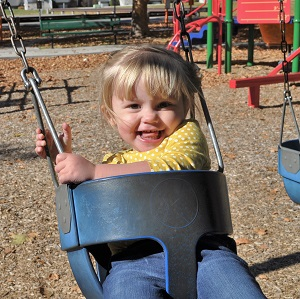

Morgan
The Nerd
I'm Morgan. I love books, computers, camping, and my family (not in that order). I am graduating in April of 2014 with a Masters of Information Systems Management from Brigham Young University. I am blessed to work with technology everyday, finding new ways to make it useful in practical situations. I love solving puzzles, which can make work feel more like play. As for a secret passion, you should see me Polka.
Kari Marie
The Crafter
I'm Kari Marie. I love my spouse, my daughter, crafting, books, and the outdoors (yes, in that order). I graduated from Utah Valley University in April 2012 with an Associates in University Studies and a particular emphasis in Hospitality Management. I am lucky to be a full-time domestic engineer and have such a percocious daughter with whom to interact. Her amazing capacity to pick up on things gives me plenty of motivation to make crafts, games, and activities to challenge her and help her to grow. One item never left at home? - my camera!
Attie Mae
The Inspiration

My name is Attie Mae. I am two. I like swings, swimming, cheese sandwiches, and snuggling with my daddie. I can sing lots of songs. My mommie takes me to the library and find lots of fun books. If I could have one thing, it would be a heffalump! I can tell you all about them.